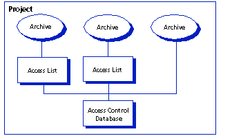

An access list defines the groups of users and individual users who are authorized to perform actions on an archive. Each archive can have one access list associated with it. Before you can define an access list for an archive, you must specify an access control database.
An access list is a subset of the users defined in the access control database. You cannot specify a user in an access list that is not defined in the access control database. If an archive does not have an access list associated with it, the access control database controls access to the archive.
Access lists make a very secure system, but they can be time consuming to maintain if you define individual users in the access list instead of groups of users. Therefore, we recommend that you specify groups in access lists rather than individual users.
| About Access Control Databases | About Access List Groups |
| Defining Users |